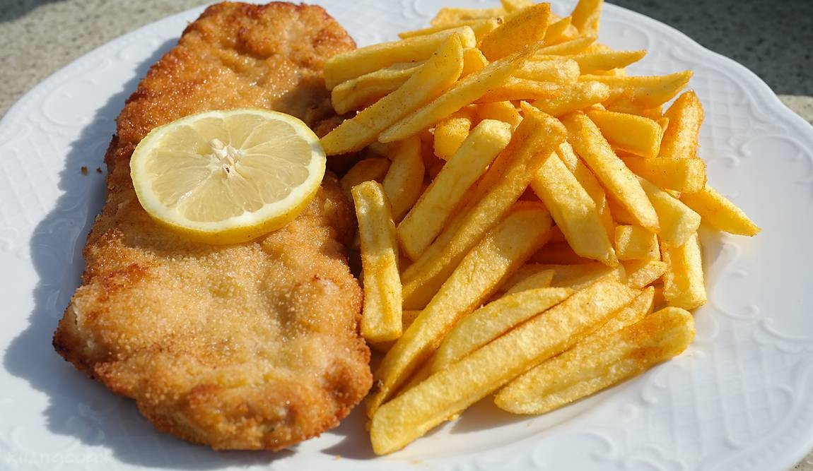
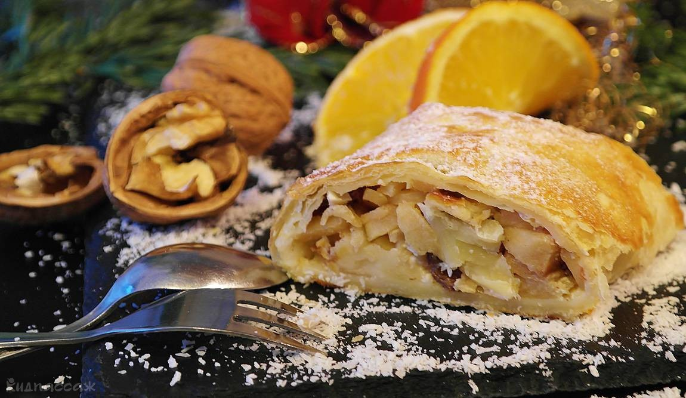

Самое известное блюдо австрийской кухни – венский шницель (Wiener Schnitzel). Ради него одного стоит пойти в ресторан: сочная телячья отбивная величиной с тарелку в золотистой панировке действительно способна удивить.Вкус у такого шницеля тоже превосходный. К нему обычно подают картофельный или капустный салат, и после такой сытной еды вряд ли нужно будет заказывать что-то еще. Не переживайте, что не сможете осилить шницель.

Визитка венской кухни, штрудель (Strudel), на первый взгляд может показаться несложным блюдом. Сочная начинка из нарезанных ломтиками яблок с сахаром, завернутая в тончайшее тесто, – это настоящий венский апфельштрудель .Есть и другой вариант, с творожной начинкой, он называется топфенштрудель (Topfenstrudel). Да и вообще в качестве начинки может использоваться все что угодно: абрикосы, вишня, мак, даже шпин